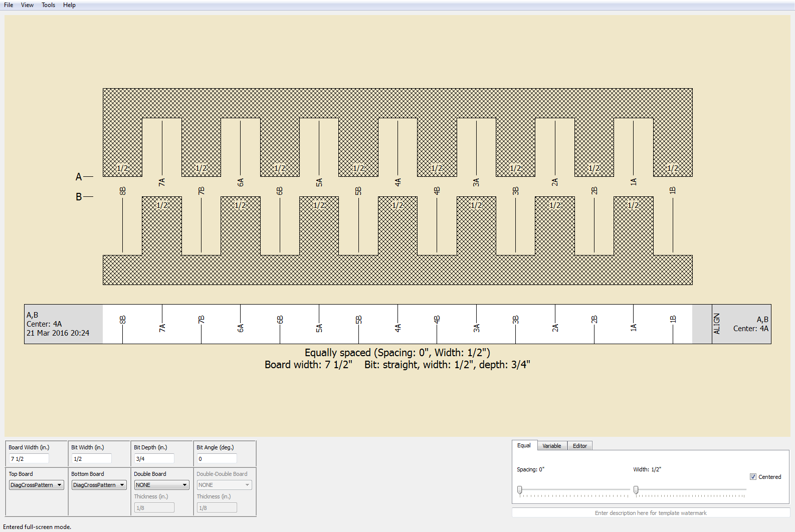

{{ site.codename }} is a woodworking layout tool for creating box and
dovetail joints. It has the following features:
Creates templates for
the Incra
LS Positioner fence. In fact, this was the original motivation for
writing {{ site.codename }}.
Support for both English and metric unit systems.
May be customized for many finger (box joint) or pin / tail (dovetail)
layouts. Currently, two patterns are included (
Equally spaced
and
Variable spaced
), along with an
Editor mode that allows you to create
any layout.
{{ site.codename }} is licensed under the
GPL, so that you're free to use and modify it.
Below is the opening screen shot of {{ site.codename}} (click on image to zoom).
